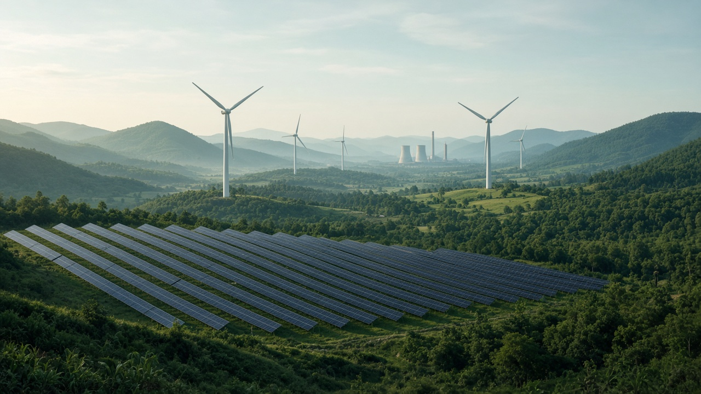
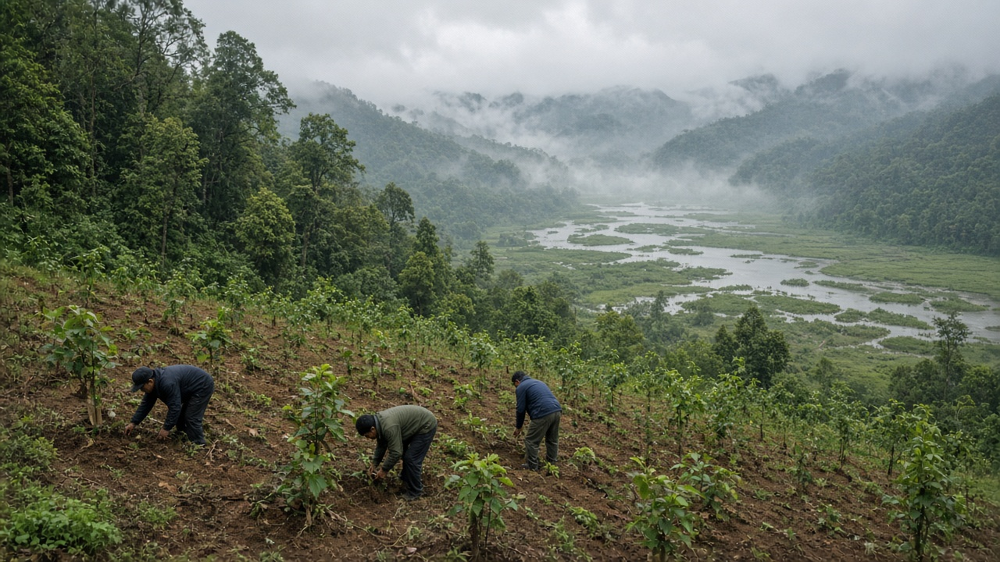
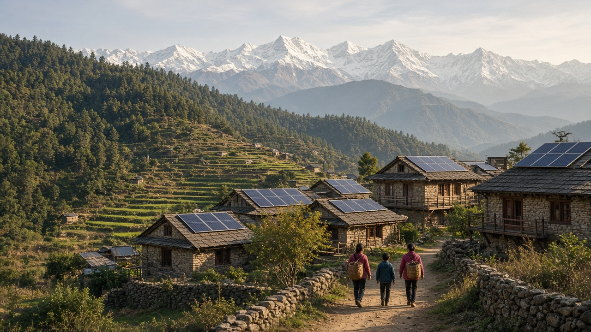

Climate Mitigation Strategies
Published on July 17, 2026

Climate mitigation refers to actions that reduce or prevent greenhouse gas emissions, enhancing sinks that remove carbon from the atmosphere. The goal is to limit the magnitude and rate of future warming by addressing root causes rather than only managing symptoms. Mitigation spans energy, transport, industry, buildings, agriculture, forestry, and waste sectors. Strategies include replacing fossil fuels with renewables, improving energy efficiency, electrifying vehicles and heating, halting deforestation, restoring ecosystems, and deploying low-carbon technologies in cement, steel, and chemical production.
Effective mitigation requires policy instruments such as carbon pricing, emissions standards, renewable energy mandates, and subsidies for clean innovation. Many countries embed mitigation targets in nationally determined contributions under the Paris Agreement, supported by sectoral roadmaps and green finance. Cities and provinces often move faster than national governments, piloting bus rapid transit, building codes, and waste-to-energy programs that can scale upward. Nature-based solutions—reforestation, soil carbon management, and wetland protection—offer cost-effective emission reductions while delivering biodiversity and water benefits. Methane reduction from agriculture, fossil fuel operations, and waste complements long-term CO₂ cuts because methane's near-term warming potency is high.
Equity considerations shape mitigation choices. Historical emitters bear greater responsibility for cumulative emissions, while developing nations need support to pursue low-carbon development without sacrificing poverty reduction. Community engagement, just transition programs for fossil fuel workers, and access to affordable clean energy ensure mitigation is socially sustainable. International cooperation on technology sharing and finance accelerates deployment of solutions that are already cost-effective in many markets. Tracking progress through transparent inventories and independent verification builds accountability. Mitigation is not a distant ideal; it is an urgent, practical agenda whose success determines how livable the climate will remain for generations not yet born.

जलवायु न्यूनीकरण भनेको ग्रीनहाउस ग्यास उत्सर्जन घटाउने वा रोक्ने कार्यहरू हो, जसले वातावरणबाट कार्बन हटाउने स्रोतहरूलाई बलियो बनाउँछ। यसको लक्ष्य केवल लक्षण व्यवस्थापन मात्र होइन, मूल कारणहरू सम्बोधन गरेर भविष्यको तापक्रम वृद्धिको परिमाण र गति सीमित गर्नु हो। न्यूनीकरण ऊर्जा, यातायात, उद्योग, भवन, कृषि, वन र फोहोर व्यवस्थापन क्षेत्रहरूमा फैलिएको छ। रणनीतिहरूमा जीवाश्म इन्धनलाई नवीकरणीय ऊर्जाले प्रतिस्थापन गर्ने, ऊर्जा दक्षता बढाउने, सवारी साधन र तताउने प्रणाली विद्युतीकरण गर्ने, वन कटान रोक्ने, पारिस्थितिकी तन्त्र पुनर्स्थापना गर्ने, र सिमेन्ट, इस्पात र रासायनिक उत्पादनमा न्यून-कार्बन प्रविधि प्रयोग गर्ने समावेश छ।
प्रभावकारी न्यूनीकरणका लागि कार्बन मूल्य निर्धारण, उत्सर्जन मापदण्ड, नवीकरणीय ऊर्जा अनिवार्यता र स्वच्छ नवप्रवर्तनका लागि अनुदान जस्ता नीतिगत उपकरणहरू आवश्यक छन्। धेरै देशहरूले पेरिस सम्झौताअन्तर्गत राष्ट्रिय रूपमा निर्धारित योगदानमा न्यूनीकरण लक्ष्य समावेश गर्छन्, जुन क्षेत्रगत सडक नक्सा र हरित वित्तले समर्थन गर्छ। सहर र प्रदेशहरू प्रायः राष्ट्रिय सरकारभन्दा छिटो अगाडि बढ्छन्, बस द्रुत पारगमन, भवन कोड र फोहोर-बाट-ऊर्जा कार्यक्रमहरू परीक्षण गर्छन् जुन ठूलो स्तरमा विस्तार हुन सक्छन्। प्रकृति-आधारित समाधान—पुनः वनीकरण, माटो कार्बन व्यवस्थापन र सिमसार संरक्षण—जैविक विविधता र पानीका लाभ दिँदै लागत-प्रभावकारी उत्सर्जन कमी प्रदान गर्छन्। कृषि, जीवाश्म इन्धन सञ्चालन र फोहोरबाट मिथेन घटाउनु दीर्घकालीन कार्बनडाईअक्साइड कटौतीको पूरक हो, किनभने मिथेनको नजिकको भविष्यको तापक्रम वृद्धि क्षमता उच्च छ।
न्यायसंगतताका विचारहरूले न्यूनीकरण विकल्पहरूलाई आकार दिन्छन्। ऐतिहासिक उत्सर्जकहरूले संचयी उत्सर्जनका लागि ठूलो जिम्मेवारी बोक्छन्, भने विकासशील राष्ट्रहरूलाई गरिबी न्यूनीकरण त्याग नगरी न्यून-कार्बन विकास अघि बढ्न सहयोग चाहिन्छ। सामुदायिक सहभागिता, जीवाश्म इन्धन कर्मचारीका लागि न्यायसंगत संक्रमण कार्यक्रम र सस्तो स्वच्छ ऊर्जामा पहुँचले न्यूनीकरण सामाजिक रूपमा दिगो बनाउँछ। प्रविधि साझेदारी र वित्तमा अन्तर्राष्ट्रिय सहयोगले धेरै बजारमा पहिलेदेखि नै लागत-प्रभावकारी समाधानहरूको तीव्र परिनियोजन गर्छ। पारदर्शी सूची र स्वतन्त्र प्रमाणीकरण मार्फत प्रगति ट्र्याक गर्दा जवाफदेहिता बलियो हुन्छ। न्यूनीकरण टाढाको आदर्श होइन; यो एक तत्काल, व्यावहारिक कार्यसूची हो, जसको सफलताले अझै जन्म नभएका पुस्ताहरूका लागि जलवायु कति बस्न योग्य रहन्छ भन्ने निर्धारण गर्छ।

जलवायु शमन उन कार्यों को संदर्भित करता है जो ग्रीनहाउस गैस उत्सर्जन को कम या रोकते हैं, और वातावरण से कार्बन हटाने वाले सिंक को मजबूत करते हैं। इसका लक्ष्य केवल लक्षणों का प्रबंधन नहीं, बल्कि मूल कारणों को संबोधित करके भविष्य के वार्मिंग की तीव्रता और दर को सीमित करना है। शमन ऊर्जा, परिवहन, उद्योग, भवन, कृषि, वानिकी और अपशिष्ट क्षेत्रों में फैला हुआ है। रणनीतियों में जीवाश्म ईंधन को नवीकरणीय ऊर्जा से बदलना, ऊर्जा दक्षता में सुधार, वाहनों और तापन का विद्युतीकरण, वनों की कटाई रोकना, पारिस्थितिकी तंत्र की बहाली, और सीमेंट, इस्पात व रासायनिक उत्पादन में निम्न-कार्बन प्रौद्योगिकी का उपयोग शामिल है।
प्रभावी शमन के लिए कार्बन मूल्य निर्धारण, उत्सर्जन मानक, नवीकरणीय ऊर्जा अनिवार्यता और स्वच्छ नवाचार के लिए सब्सिडी जैसे नीतिगत उपकरणों की आवश्यकता होती है। कई देश पेरिस समझौते के तहत राष्ट्रीय रूप से निर्धारित योगदान में शमन लक्ष्य शामिल करते हैं, जो क्षेत्रीय रोडमैप और हरित वित्त द्वारा समर्थित होते हैं। शहर और प्रांत अक्सर राष्ट्रीय सरकारों से तेजी से आगे बढ़ते हैं, बस रैपिड ट्रांजिट, भवन कोड और कचरे से ऊर्जा कार्यक्रमों का परीक्षण करते हैं जो बड़े पैमाने पर विस्तारित हो सकते हैं। प्रकृति-आधारित समाधान—पुनर्वनीकरण, मृदा कार्बन प्रबंधन और आर्द्रभूमि संरक्षण—जैव विविधता और जल लाभ प्रदान करते हुए लागत-प्रभावी उत्सर्जन कमी प्रदान करते हैं। कृषि, जीवाश्म ईंधन संचालन और अपशिष्ट से मीथेन में कमी दीर्घकालिक कार्बनडाईअक्साइड कटौती की पूरक है, क्योंकि मीथेन की निकट-अवधि वार्मिंग क्षमता अधिक है।
न्याय संबंधी विचार शमन विकल्पों को आकार देते हैं। ऐतिहासिक उत्सर्जक संचयी उत्सर्जन के लिए अधिक जिम्मेदारी वहन करते हैं, जबकि विकासशील राष्ट्रों को गरीबी उन्मूलन का बलिदान दिए बिना निम्न-कार्बन विकास के लिए सहायता की आवश्यकता है। सामुदायिक भागीदारी, जीवाश्म ईंधन श्रमिकों के लिए न्यायसंगत संक्रमण कार्यक्रम और सस्ती स्वच्छ ऊर्जा तक पहुंच शमन को सामाजिक रूप से टिकाऊ सुनिश्चित करते हैं। प्रौद्योगिकी साझाकरण और वित्त पर अंतर्राष्ट्रीय सहयोग उन समाधानों के तेजी से उपयोग को गति देता है जो कई बाजारों में पहले से ही लागत-प्रभावी हैं। पारदर्शी सूचियों और स्वतंत्र सत्यापन के माध्यम से प्रगति की निगरानी जवाबदेही को मजबूत करती है। शमन कोई दूर का आदर्श नहीं है; यह एक तत्काल, व्यावहारिक एजेंडा है, जिसकी सफलता यह निर्धारित करती है कि अभी जन्म नहीं हुई पीढ़ियों के लिए जलवायु कितनी रहने योग्य रहेगी।